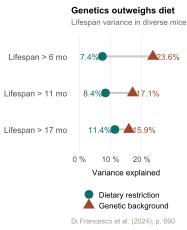
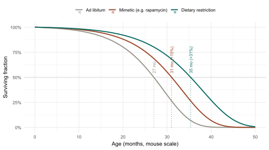

6 Dietary Restriction and Its Mimetics
The most reproducible way to extend life in the laboratory is also the least marketable: eat less. This chapter asks what dietary restriction really does, and whether a pill can imitate it.
If the previous chapter mapped the network of nutrient sensors at the centre of the cell’s economy, this one asks the obvious follow-up. If those sensors decide how fast cells age by reading the supply of food, then the most direct lever on ageing is the supply itself. Dietary restriction is that lever — the oldest, cheapest and most robust intervention in the entire field — and the search for drugs that pull it without the hunger is the beginning of geroscience as a therapeutic enterprise.
With this chapter the book crosses from mechanism into therapy. Parts I and II asked what ageing is and how it works; Part III asks what can be done about it, and it opens here not by accident. Of all the manoeuvres that lengthen life in animals, eating less is the one with the deepest evidence and the clearest mechanism, and every pharmacological strategy in this part of the book is, in one way or another, measured against it.
6.1 Eating less: the oldest intervention
The finding is old and stubbornly reproducible. In 1935 McCay and colleagues reported that rats fed a restricted diet lived markedly longer than those fed freely, and in the ninety years since, the same result has appeared in yeast, nematodes, flies, mice and rats with a consistency rare in biology: reduce food intake without causing malnutrition, and lifespan and healthspan extend together (Green et al., 2022). Dietary restriction is, by some distance, the gold standard against which all other interventions are judged.
Its mechanism is precisely the network of the previous chapter. Restriction lowers signalling through insulin/IGF-1 and mTORC1, raises the activity of AMPK and the sirtuins, and switches on the autophagy and stress-defence programmes that maintain the ageing cell (Section 5.1). What restriction does, in other words, is tilt the whole nutrient-sensing axis from building towards maintaining — which is why a single dietary change touches so many hallmarks at once (López-Otín et al., 2016).
NoteKey concept — restriction works through the sensors, not the stomach
The benefit of dietary restriction is not a generalised effect of thinness or of eating less food; it is a specific consequence of turning down a signalling network. Restriction is read by the cell as a coherent message — nutrients are scarce, switch to maintenance — and that message, relayed through IIS, mTORC1, AMPK and the sirtuins, is what extends life (Green et al., 2022). This is the conceptual hinge of the chapter: if the effect lives in the sensors rather than in the diet itself, then in principle a drug that sends the same message could reproduce the benefit without the hunger. The entire field of restriction mimetics rests on that single inference.
The most important test of whether this translates upward came from two long-running studies of caloric restriction in rhesus monkeys, begun in the late 1980s. For years they seemed to disagree: the University of Wisconsin study found a clear survival benefit, while the parallel study at the US National Institute on Aging found none. The apparent contradiction was resolved by a joint reanalysis showing that design differences — what the control animals were fed, and when restriction began — largely explained the gap, and that moderate restriction does improve health and survival in a long-lived primate (Mattison et al., 2017).
Yet even within a single species, genetic background has proved a more powerful determinant of longevity than the restriction itself. In a study of nearly a thousand genetically diverse mice, dietary restriction explained between 7 and 11 per cent of lifespan variance, while genetic background accounted for between 16 and 24 per cent across three survival thresholds — a gap that narrowed, but never closed, among the longest-lived animals (Di Francesco et al., 2024). The monkey saga is worth remembering for two reasons: it shows the benefit reaching into a species close to our own, and it shows how easily two careful studies of the same intervention can appear to conflict — a reminder that study design, not biology alone, shapes results.
The modern reprise of those monkey studies is the DRiDO experiment, a longitudinal trial of 960 genetically diverse female mice randomised to five dietary regimens — ad libitum feeding, one or two fasting days per week, and twenty or forty per cent caloric restriction. Median lifespan extended in proportion to the degree of restriction, with forty per cent caloric restriction outperforming both fasting regimens (Di Francesco et al., 2024: 690-691). Two findings deserve emphasis: that the strongest survival benefit came from the most stringent restriction, and that individual genetic background explained more of the variance in lifespan than the dietary intervention itself — a humbling result that the chapter’s clinical sections will need to remember.
6.2 Not just less, but when and what
“Eat less” turns out to be too simple a prescription, because restriction has at least three dials, and they are partly independent: how much, how often, and of what. The clearest recent demonstration concerns timing. When mice on caloric restriction are studied closely, they impose on themselves long daily fasts, raising the question of whether the calories, the fasting, or the time of day carries the benefit. A landmark experiment separated these and found that thirty per cent restriction alone extended life by about a tenth, but the same restriction delivered as a single nocturnal meal — aligning the long fast with the animals’ rest phase — extended it by more than a third (Acosta-Rodríguez et al., 2022). The molecular reach of this timing effect is striking: profiling 22 mouse tissues across the day shows that confining feeding to a nine-hour window remodels the diurnal transcriptome across virtually every organ system, with implications for metabolic, cardiovascular and oncological disease (Deota et al., 2023). When you eat, it appears, can matter as much as how much.
This is the logic behind the various forms of fasting now studied in humans: alternate-day fasting, the so-called 5:2, time-restricted eating that confines food to a window of eight hours or so, and the periodic fasting-mimicking diet. Their common physiological signature is the metabolic switch — once liver glycogen is exhausted, usually well into an overnight fast, the body turns from glucose to fat-derived ketone bodies as fuel, and that switch itself activates the stress-resistance and repair programmes associated with longevity (Cabo & Mattson, 2019).
The human evidence on the fasting-mimicking diet has caught up since: three monthly cycles of a five-day low-calorie, low-protein, high-unsaturated-fat regimen reduced median biological age by 2.5 years across two clinical trial populations, with concurrent reductions in insulin resistance, hepatic fat and a rejuvenation of the myeloid-to-lymphoid ratio that tracks immune ageing (Brandhorst et al., 2024).
ImportantAnalogy — switching fuel tanks
A body running on regular meals is like a car that never runs low: always topped up with glucose, never obliged to touch the reserve tank. The reserve — fat, burned as ketone bodies — is not merely a backup fuel; switching to it flips a metabolic mode, the way an aircraft changes systems for cruise. Genes for repair and stress resistance come on; growth signalling quiets. The point of intermittent fasting is not the hunger but the switch: forcing the engine, periodically, onto its reserve tank long enough to run the maintenance routines that the fed state suppresses. A meal at midnight does not flip the switch; a sixteen-hour fast does.
The third dial is composition. It is increasingly clear that not all calories restrict equally — restricting protein, and specific amino acids such as methionine, reproduces much of the benefit of cutting calories overall, implicating the amino-acid arm of mTORC1 signalling rather than energy as such (Green et al., 2022). The honest summary of this section is that dietary restriction is not one intervention but a family of them, that timing and composition modulate the effect as strongly as quantity, and that head-to-head human comparisons are still sparse — which is part of why a pharmacological shortcut is so attractive.
6.3 From diet to drug: caloric restriction mimetics
The idea of a caloric restriction mimetic — a compound that reproduces the benefits of restriction without reducing intake — was articulated around the turn of the century, and the field has grown from a single candidate to dozens (Partridge et al., 2020). The strategy follows directly from the Key concept above: if restriction acts by turning down anabolic sensors and turning up catabolic ones, then a drug that hits any of those nodes should mimic part of the effect. Rapamycin inhibits mTORC1; metformin activates AMPK; spermidine and the NAD⁺ precursors push autophagy and the sirtuins respectively; acarbose and the SGLT2 inhibitors blunt the post-prandial glucose surge in a way the body reads as restriction-like. Table 6.1 sets out the main candidates against the nutrient-sensing nodes they target.
The trouble with longevity drugs is that everything looks promising in a dish and most things fail in an animal, so the field needed an impartial referee. The US National Institute on Aging’s Interventions Testing Program has been that referee.
TipIn depth — the Interventions Testing Program
The Interventions Testing Program (ITP) was built to solve a credibility problem: too many longevity claims came from single laboratories, small samples and short-lived or genetically uniform mice. The ITP tests compounds simultaneously at three independent sites, on genetically heterogeneous mice, under shared protocols and with enough animals to detect real effects — the closest thing the field has to a verdict. Its results have been sobering and clarifying in equal measure. Rapamycin extends lifespan robustly in both sexes, even when started late in life (Harrison et al., 2009); acarbose and the oestrogen-related steroid 17α-estradiol extend it too, but preferentially or only in males (Harrison et al., 2014); the SGLT2 inhibitor canagliflozin shows the same male-biased benefit. Many heavily marketed compounds, by contrast, produced no lifespan effect at all. The ITP is, in effect, the place where promising mimetics go to be believed or buried.
Two lessons from that pipeline deserve emphasis. The first is sexual dimorphism: several of the agents that work do so in only one sex, a reminder that “extends lifespan” is rarely an unqualified statement. The second concerns metformin, the most widely prescribed of all candidate mimetics and the basis of a large planned human trial on the strength of its diabetic patients apparently outliving non-diabetic controls (Kulkarni et al., 2020). Yet a recent meta-analysis across vertebrates found that, unlike rapamycin and unlike dietary restriction itself, metformin does not reliably extend lifespan in healthy animals (Ivimey-Cook et al., 2025) — a discrepancy between mechanistic promise and hard outcome that the book flags now and revisits in Section 11.1.
ImportantAnalogy — fasting in a pill
A restriction mimetic is an attempt to send the body a forged message. Dietary restriction tells the cell, truthfully, that food is scarce; rapamycin and its cousins whisper the same thing to the sensors while the larder stays full. The appeal is obvious — all of the signal, none of the sacrifice. But a forged message is still a partial one. Restriction shifts the entire network at once; a drug typically presses a single node, and the body, sensing the rest of the network is unchanged, responds incompletely and sometimes counterproductively. This is why the most effective mimetics tend to be those, like rapamycin, that sit highest in the network — and why “fasting in a pill” remains a goal more than a product.
The mechanistic case for one entry in Table 6.1 deserves an update. Spermidine, a natural polyamine and the most food-borne of the candidate mimetics, has long been known to induce autophagy through hypusination of the eIF5A factor and to extend lifespan across yeasts, flies and mice (Hofer et al., 2022). What was missing was a direct link to the fasting state itself. Hofer and colleagues have since shown that fasting and caloric restriction raise endogenous spermidine levels in yeast, flies, mice and human volunteers, and that pharmacological or genetic blockade of polyamine synthesis abolishes the lifespan- and healthspan-extending effects of fasting (Hofer et al., 2024). Spermidine is therefore not merely a candidate mimetic but, in part, the endogenous mediator of what fasting itself accomplishes.
| Agent | Nutrient-sensing target | Strongest evidence | Caveat |
|---|---|---|---|
| Rapamycin | mTORC1 (inhibits) | ITP: robust lifespan extension, both sexes; first human RCT | Immunosuppression; metabolic side effects |
| Metformin | AMPK (activates) | Large safety record; human ageing trial planned | No lifespan extension alone in healthy mice |
| Acarbose | Post-prandial glucose | ITP: lifespan extension, male-biased | Gastrointestinal effects |
| 17α-estradiol | (non-feminising steroid) | ITP: lifespan extension, males only | Sex-specific |
| Canagliflozin | Glucose excretion (SGLT2) | ITP: lifespan extension, males | Sex-specific |
| Spermidine | Autophagy (eIF5A hypusination) | Endogenous mediator of fasting effects in humans (Hofer et al., 2024); observational and small clinical trials | Optimal dosing and long-term causality still open |
| NAD⁺ precursors | Sirtuins | Raise NAD⁺ markers in humans | No robust clinical benefit yet (Section 5.1) |
A useful way to picture what these interventions do to a population, rather than to a pathway, is through their effect on survival itself. Figure 6.2 simulates the survival curves of three groups whose mortality follows the Gompertz law of Chapter 1 — ageing freely, on a mimetic, and on dietary restriction — and shows the characteristic rightward shift, and modest rectangularisation, that lifespan-extending interventions produce.
Show the simulation code
library(ggplot2)
t <- seq(0, 50, by = 0.05)
gompertz_S <- function(t, a, b) exp(-(a / b) * (exp(b * t) - 1))
groups <- list(
"Ad libitum" = c(a = 0.0015, b = 0.160),
"Mimetic (e.g. rapamycin)" = c(a = 0.0010, b = 0.150),
"Dietary restriction" = c(a = 0.0008, b = 0.135)
)
df <- do.call(rbind, lapply(names(groups), function(g) {
p <- groups[[g]]
data.frame(t = t, S = gompertz_S(t, p["a"], p["b"]), group = g)
}))
df$group <- factor(df$group, levels = names(groups))
med <- sapply(names(groups), function(g) {
p <- groups[[g]]; t[which.min(abs(gompertz_S(t, p["a"], p["b"]) - 0.5))]
})
ref <- med["Ad libitum"]
lab <- data.frame(
group = factor(names(groups), levels = names(groups)),
med = med,
txt = paste0(round(med, 0), " mo (+", round(100 * (med - ref) / ref), "%)")
)
lab$txt[lab$group == "Ad libitum"] <- paste0(round(ref, 0), " mo")
pal <- c("Ad libitum" = "#9A968C", "Mimetic (e.g. rapamycin)" = "#9C4A2E",
"Dietary restriction" = "#0F6E66")
ggplot(df, aes(t, S, colour = group)) +
geom_hline(yintercept = 0.5, colour = "grey80", linewidth = 0.4) +
geom_line(linewidth = 1) +
geom_segment(data = lab, aes(x = med, xend = med, y = 0, yend = 0.5, colour = group),
linetype = "dotted", linewidth = 0.5, inherit.aes = FALSE) +
geom_text(data = lab, aes(x = med, y = 0.54, label = txt, colour = group),
angle = 90, hjust = 0, size = 3, inherit.aes = FALSE) +
scale_colour_manual(values = pal) +
scale_y_continuous(labels = scales::percent) +
labs(x = "Age (months, mouse scale)", y = "Surviving fraction", colour = NULL) +
theme_minimal(base_size = 11) + theme(legend.position = "top")
6.4 Does it work in people?
Everything so far rests on animals, and the chapter must end where the honesty of the field is tested: in humans. The pivotal evidence is CALERIE, the only randomised controlled trial of sustained caloric restriction in healthy, non-obese adults. Over two years its participants achieved a more modest restriction than they were assigned — around 11.9 per cent rather than twenty-five — yet even that produced measurable benefit. Detailed immune and metabolic analysis found that restriction reduced markers of age-related inflammation and acted on the thymus and on specific immunometabolic regulators, identifying molecular mediators of the effect rather than merely weight loss (Kraus et al., 2019; Spadaro et al., 2022). And when the participants’ biological age was tracked with epigenetic clocks, restriction slowed the pace of ageing measured by one purpose-built clock by a small but real margin, even as other clocks showed no change (Waziry et al., 2023). A complementary secondary analysis reported that two years of restriction lowered the circulating concentrations of a panel of senescence-associated proteins — PARC, TARC, TNFR1, TNFR2 and VEGF among them — in proportion to changes in insulin sensitivity, linking moderate restriction in healthy humans to the senescence hallmark of Chapter 4 (Aversa et al., 2024).
A subsequent analysis of the secreted proteome of the same CALERIE participants identified complement component C3a as a specific immunometabolic checkpoint: caloric restriction suppressed C3a, and its intra-adipose neutralisation reduced inflammaging in mice; the same reduction was observed downstream of FGF21 overexpression and PLA2G7 deficiency, two interventions that independently extend mouse healthspan (Mishra et al., 2026).
CautionCaveat — the distance between a slowed clock and a longer life
CALERIE is the strongest human evidence the field has, and it is worth being clear about what it does and does not show. It shows that moderate restriction is feasible for two years, improves cardiometabolic and immune markers, and nudges a measure of biological ageing (Kraus et al., 2019). It does not show that restriction makes people live longer or postpones disease, because no human trial has run long enough to measure those endpoints, and it cannot, in a free-living population, disentangle the effect of restriction from the effect of the weight loss that accompanies it (Waziry et al., 2023). The internal heterogeneity of the trial itself reinforces this: telomere length was shortened in CALERIE participants during the first year of restriction before stabilising in the second, a result the authors interpret as the transient metabolic cost of weight loss outweighing the protective effect of restriction (Hastings et al., 2024). Different windows of the same trial, read by different molecular instruments, return different verdicts — a feature, not a bug, of measuring something as multidimensional as ageing. The same caution applies, doubled, to the mimetics: the metformin trial and the first rapamycin trials in healthy adults (Moel et al., 2025) are measuring safety and biomarkers, not lifespan. A slowed clock is a promising signal, not a proven outcome — and the gap between the two is exactly where this field is most often oversold, as Section 11.1 will argue.
Dietary restriction and its mimetics share a single logic: slow the rate at which damage accumulates by turning the cell towards maintenance. It is a strategy of deceleration, and a powerful one — but it is inherently a strategy of degree, buying time rather than reversing the clock, and it leaves untouched the damaged cells that have already accumulated. A cell that has tipped into senescence does not become young again because its neighbours are eating less.
That points to a different kind of intervention. If restriction slows the making of damaged cells, the next strategy proposes to remove them outright — to clear the senescent cells of Chapter 4 from ageing tissue and let what remains function as though younger. We turn from slowing the accumulation of damage to subtracting it: from dietary restriction to senolytics.